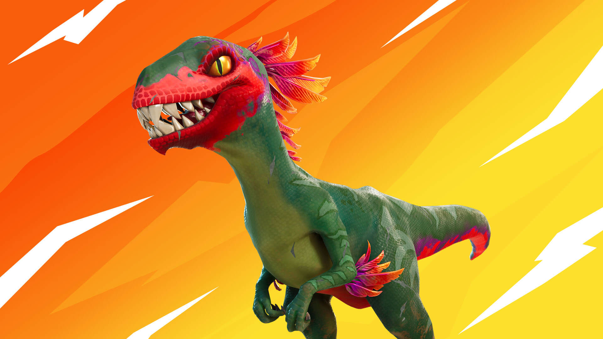

 |
Es un juego de tipo batalla real en el que compiten hasta cien jugadores en solitario
o en escuadrones de dos o cuatro miembros. Los jugadores saltan de un autobús que cruza
el mapa en el momento que deseen, y empiezan sin armas. Cuando aterrizan, deben buscar
armas, objetos útiles y recursos, evitando que los maten mientras atacan a otros jugadores.
La acción se divide en rondas con una duración determinada. Al acabar cada ronda, el área
segura del mapa se reduce en tamaño debido a una tormenta en ciernes; los jugadores que
están fuera de esa área segura reciben daño y pueden morir a causa de ella. Esto obliga a
los jugadores a estar en espacios cada vez más cerrados y fomenta los combates entre jugadores.
El último jugador o escuadrón vivo es el ganador.
|